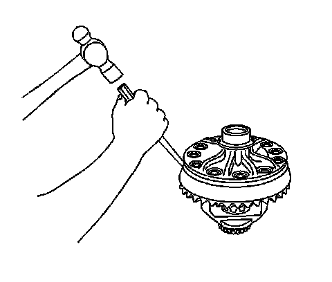
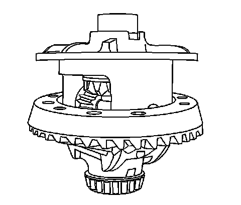

Pinion Gear: Service and Repair
Drive Pinion and Ring Gear Replacement
Tools Required
J 22536 Pinion Driver
Removal Procedure
1. Raise and support the vehicle. Refer to Lifting and Jacking the Vehicle.
2. Remove the differential assembly.
3. Remove the pinion yoke and the oil seal.
4. Install the J 22536 as shown.
Ensure that the J 22536 is firmly seated on the pinion.
5. Drive the pinion out using the J 22536 and a hammer.
Strike the J 22536 slowly. Do not let the pinion fall out of the rear axle housing.
6. Remove the collapsible spacer from the pinion. Discard the spacer.
7. Remove the pinion bearings and the cups.

Important: The ring gear bolts have left-hand threads.
8. Remove the ring gear bolts. Discard the bolts.

Notice: Refer to Ring Gear Removal Notice.
9. Remove the ring gear from the differential. Drive the gear off with a brass drift if necessary.
Installation Procedure
Important: The mating surface of the ring gear and the differential case must be clean and free of burrs before installing the ring gear.

1. Install the ring gear to the differential case.
Important: The ring gear bolts have left-hand threads.
2. Install the new ring gear bolts.
Hand start each bolt to ensure that the ring gear is properly installed to the differential case.
Notice: Refer to Fastener Notice.
3. Tighten the ring gear bolts. Tighten the ring gear bolts alternately and in stages, gradually pulling the ring gear onto the differential case.
^ For the 8.6 inch axle, tighten the ring gear bolts in sequence to 120 N.m (89 lb ft).
^ For the 9.5/9.5LD inch axle, tighten the ring gear bolts in sequence to 140 N.m (103 lb ft).
^ Install the pinion bearing cups.
^ Determine the selective shim thickness for the pinion gear. Refer to Pinion Depth Adjustment.
^ Install the selective shim onto the pinion.
^ Install the inner pinion bearing to the pinion.
^ Install a new collapsible spacer.
^ Lubricate the pinion bearings with axle lubricant. Refer to Fluid and Lubricant Recommendations.
^ Install the outer pinion bearing into the axle housing.
^ Install the new pinion oil seal.
^ Install the pinion into the axle housing.
^ Install the pinion yoke.
^ Install the differential assembly.
^ Fill the axle with lubricant. Use the proper fluid. Refer to Rear Axle Lubricant Replacement.
^ Lower the vehicle.